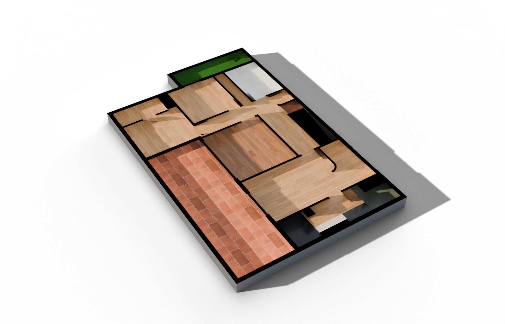
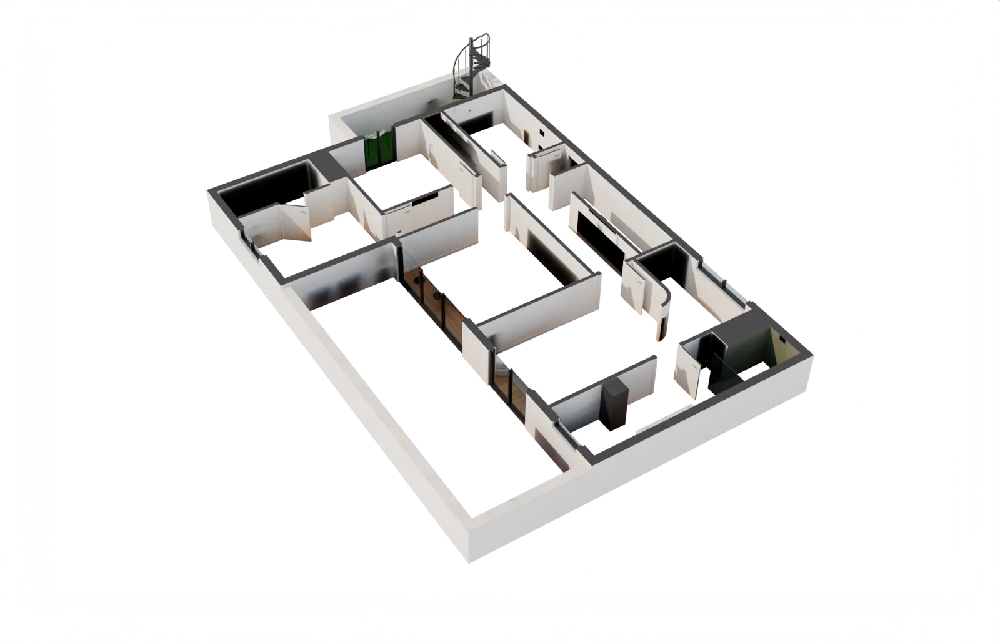
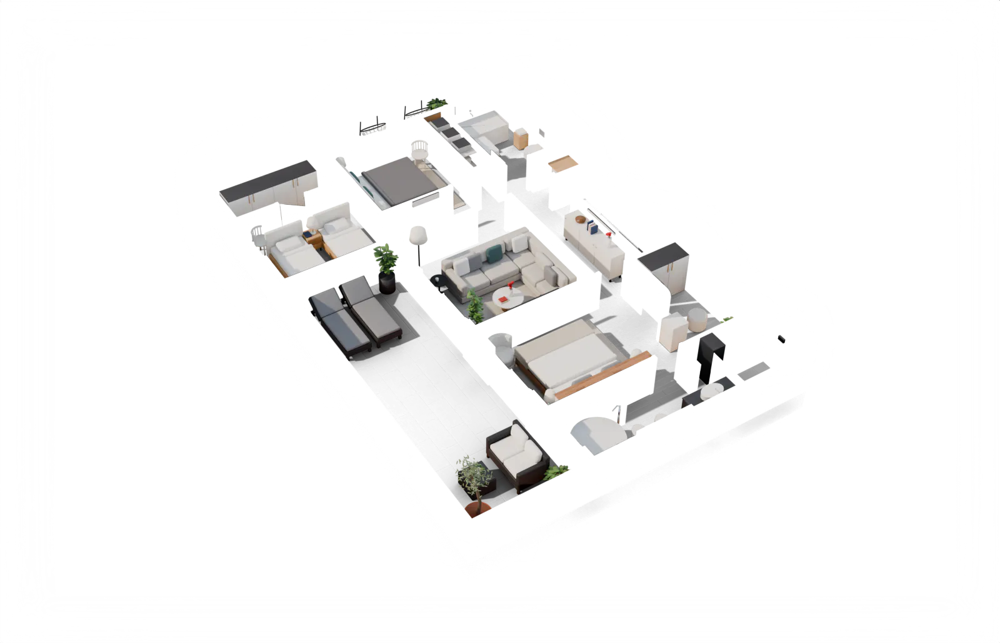

¿Por qué los planos antiguos eran azules?
hierro + sol = azul
1842
John Herschel · astrónomo inglés
papel con sales de hierro
papel de calco
luz → azul
tinta → blanco
✓ copia hecha
más de 100 años
blueprint
inglés · sustantivo
1. Plano de una obra.
2. Plan detallado de algo.
2. Plan detallado de algo.
blue = azul · print = copia



Villa de ejemplo · modelo 3D desde su plano

homeview3d.com
¿Por qué…?